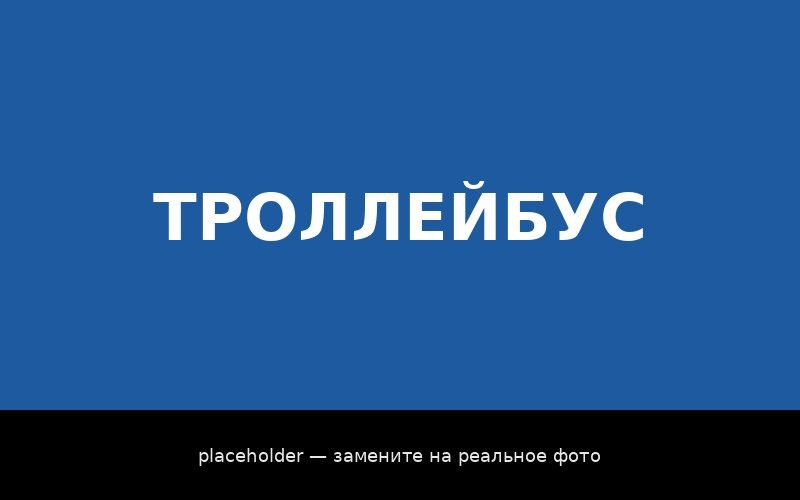
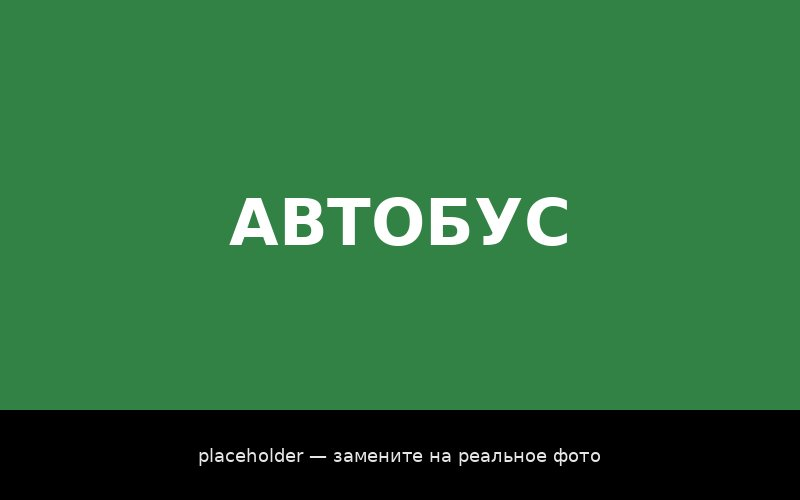

Сайт об общественном транспорте города Иркутска
| Главная | Трамвай | Троллейбус | Автобус | Маршрутное такси |
Общественный транспорт Иркутска
Иркутск — крупный сибирский город с населением свыше 600 тысяч человек. Как и в любом крупном городе, общественный транспорт здесь — не просто удобство, а основа повседневной жизни: школьники едут на учёбу, взрослые — на работу, пенсионеры — в поликлиники и магазины. От качества автобусов, троллейбусов и трамваев напрямую зависит, насколько комфортно живётся горожанам.
Почему общественный транспорт так важен для Иркутска:
- город вытянут вдоль Ангары, и центр связан с отдалёнными микрорайонами (Ново-Ленино, Иркутск II, Солнечный, Университетский) только наземным транспортом;
- далеко не у всех есть автомобиль, а зимой при −30 °C дойти пешком — не вариант;
- чем больше людей пользуется общественным транспортом, тем меньше пробок на узких улицах исторического центра;
- электротранспорт (трамвай и троллейбус) не загрязняет воздух, что особенно важно для города в котловине, где зимой часто стоит смог.
Сегодня в Иркутске работают четыре основных вида общественного транспорта. Нажмите на картинку, чтобы узнать о каждом подробнее.
 Трамвай |
 Троллейбус |
|
 Автобус |
 Маршрутное такси |
Источник дополнительной информации: сайт администрации г. Иркутска